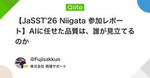
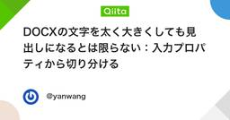

ソフトウェアテストタグが付けられた新着記事 - Qiita
https://qiita.com
Qiitaは、エンジニアに関する知識を記録・共有するためのサービスです。 プログラミングに関するTips、ノウハウ、メモを簡単に記録 & 公開することができます。
フィード

【JaSST'26 Niigata 参加レポート】AIに任せた品質は、誰が見立てるのか
ソフトウェアテストタグが付けられた新着記事 - Qiita
はじめに2026年9月18日に開催された JaSST'26 Niigata にオンライン参加してきました。今回のテーマは「AI時代のQA Re-Engineering —— 思考の純度を高め、品質の壁を突破する」でした。LayerX の中野直樹さんによる基調講演「AIに...
1日前
引き継ぎ時に消さないでおきたい、番号付きに見える段落のバックスラッシュ
ソフトウェアテストタグが付けられた新着記事 - Qiita
レビュー中のMarkdownに 7\. Inspect と書かれていると、バックスラッシュを余分な記号だと思うかもしれません。しかし、ドットの直前にあるその記号は、数字とドットをリストの開始記号として解釈させないための手掛かりです。削除すると、普通の段落として渡したかった内...
3日前
結合見出しのある表をMarkdownで渡す前に、列の意味を引き継ぐ
ソフトウェアテストタグが付けられた新着記事 - Qiita
開示：この記事はYan Wang / LensUp向けにGPT-6.1 Terraで大部分を下書きし、Codex AIがソースと事実を確認しました。Yan WangはLensUpの関係者です。記載した結果は、変更していないconvertDocxと既存のAnyDoc WASM...
4日前

DOCXの文字を太く大きくしても見出しになるとは限らない：入力プロパティから切り分ける
ソフトウェアテストタグが付けられた新着記事 - Qiita
開示：この記事はYan Wang / LensUp向けにGPT-6.1 Terraで大部分を下書きし、Codex AIがソースと事実を確認しました。Yan WangはLensUpの関係者です。記載した結果は、変更していないconvertDocxと既存のAnyDoc WASM...
4日前